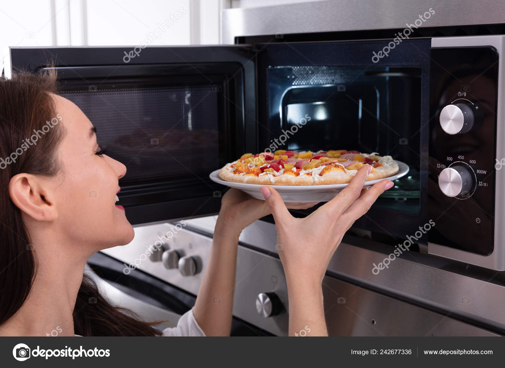

Leftover Pizza

Description:
Sometimes pizza is even better the second day, after it's been sitting in your fridge for a lil' bit.
Ingredients:
- Yesterday's leftover pizza
- A microwave
- Some ranch if you like that type of thing on your pizza
Steps:
- Order a large pizza. Eat as much as you can by yourself. If you manage to eat the whole thing, order another, we need leftovers for this recipe
- Wait a day
- Take your leftove pizza out of the fridge and put a slice or two into the microwave
- Heat it up in the microwave for about a minute (give or take 15 seconds depending on how strong your microwave is)
- Let it cool off if it's too hot. Don't wanna burn the roof of your mouth.
- Enjoy!